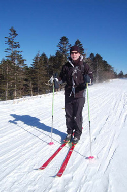

|
YC&AC, February. In April Kevin Morgan, from Northern Ireland and a member of the YC&AC first soccer team, will attempt a 70 mile cross-country skiing expedition to the North Pole in order to raise funds for a charity helping homeless children. Borneo Ice Station, a floating, temporary settlement in the Arctic Circle at about 89 degrees north featuring a landing strip built on the polar ice, will be the starting point after flying in from Spitzbergen, Norway.
The organisation running this expedition is the ‘VICAAR’ Agency and will be led by Dr Victor Boyarsky who is currently one of the world's best known polar explorers. He also heads the Russian State Arctic and Antarctic museum.
The expedition team will consist of around 5 people. After training and equipment testing in Norway and the Arctic Circle they will travel on cross country skis for approximately 8 hours a day for 6 to 8 days, depending on ice and weather conditions, in their attempt to reach the pole. Kevin will pull a sled weighing around 40kg with all his food and equipment all the way to the pole! The training program is pretty intense and includes Kevin going for training runs pulling two car tyres attached by climbing rope to a back pack. Apparently this has raised a few eyebrows in Azabu Juban where Kevin lives! He also has to gain 8kg in weight to counter the extreme weight loss that occurs.
Other challenges will include temperatures which will fall as low as -40ºC, blizzards, seasonal drifting and breaking ice, whiteouts, the risk of hypothermia and frostbite and polar bear attacks. Each party going to the North Pole must be armed in the event of a bear attack. The team will carry a 12-gauge shotgun to ward off any curious or lost bears than wander too close to camp.
As the area above the Arctic Circle will be exposed to 24-hour sunlight during April, eyeshades are required to sleep. Accommodation will be in a tent throughout. The expedition team will carry a radio beacon in the event that an emergency helicopter pick up is required. If the trip is successful a helicopter pick up at the North Pole will be arranged by satellite phone (blizzards and breaking ice permitting of course!).
***********************
Kevin is attempting to raise badly needed funds for Future Hope India - a registered charity in India (No. 14019P) and the UK (No. 1001769). Future Hope was established in 1988 to provide emotional support, education and opportunity to the street children of Calcutta, including those who have suffered abandonment, illnesses such as leprosy, sexual and physical abuse and criminal exploitation. Future Hope now runs five homes and a school for over 200 children between the ages of 5 and 19. Fundraising is already underway and Kevin’s aim is to raise in excess of 2 million Yen which will enable Future Hope to build a further school and shelter in Calcutta. There are in excess of 100,000 homeless children in Calcutta. 100% OF CONTRIBUTIONS PLEDGED WILL DIRECTLY BENEFIT THE CHILDREN AT FUTURE HOPE. KEVIN’S ENTIRE TRIP INCLUDING TRAVEL, EQUIPMENT AND ACCOMMODATION COST WILL BE PAID FOR BY HIMSELF WITH NO CONTRIBUTION OR SUBSIDY BY FUTURE HOPE.
Should you want to make a donation to this worthy cause or even be an official sponsor of Kevin’s expedition please contact Kevin directly at Kevin.morgan@herbertsmith.com or call him on 090-9801-3756. All donations gratefully received.
Kevins teammates at YCAC undertake to match Yen for Yen anything raised by other TML members
Future Hope is a non-political charity and is not affiliated to any single religious denomination. For further information on Future Hope refer to www.futurehope.co.uk.
|